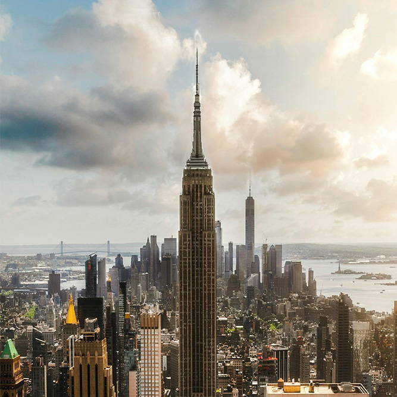

Midtown Manhattan / New York City
Empire State Building
An iconic Art Deco skyscraper in the heart of Manhattan.
The Empire State Building is an Art Deco skyscraper in Midtown Manhattan that once held the title of world's tallest building.

About
Built
Constructed in a record 1 year and 45 days from 1930–1931, the 102-story tower was designed by the firm Shreve, Lamb & Harmon Associates and opened on May 1, 1931 with President Hoover pressing a button in Washington, D.C. that turned on the lights and opened the building.
Today
Its history, iconic silhouette, and observation decks make it a global tourist destination, and official city and national landmark. Millions of people visit it every year.
Directions
Use the observatory visitor entrance at 20 West 34th Street, between Fifth and Sixth avenues.